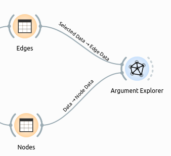
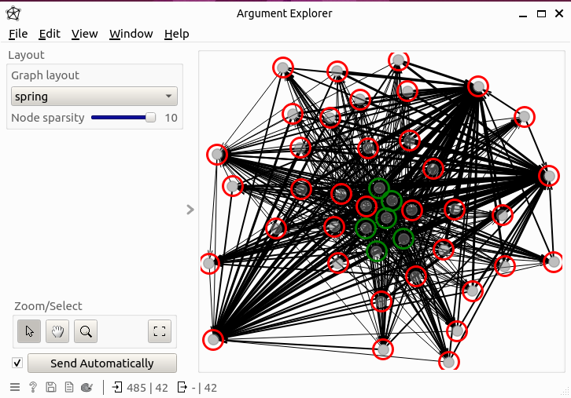

Argument Explorer
Network visualization of argument attacking relationships.
Inputs
Edge Data: Data table that contains edge information of the argument attacking network, including columns: source, target, weight.Node Data: Data table that contains node information of the argument attacking network.
Outputs
Selected Data: Data table that contains information of the selected nodes.
Description
Argument Explorer has the following function:
Network visualization: The argument attacking network is visualized with node coler representing their labels (green for supportive and red for defeated) and edge width for showing weights.
Node selection: This widget allows to select node(s) and this will update the output table that contains the information of selected nodes. Also, when a node is selected, all the edges relevant to that node will be highlighed by hiding the unrelevant edges.
Layouting: A set of network layout can be chosen, that include spring, multipartite, kamada kawai, and spectral.
Navigation: This widget supports a series of navigating functions for better observing the network, that include zooming, panning, and centralizing. Also, by hovering over a node, the relevant meta information of that node will be shown in the popping-up tooltips.
Control
Graph layout: Layout used for positing nodes and edges in the network.Node sparsity: Spatial closeness of nodes, in range of [1, 10]Zoom/Select: Navigation tools for better observing the network.Send Automatically: if the checkbox is enabled, the information of selected nodes will be automatically sent to the output data.
Example
Here is an example workflow that shows how the widget works:

where the input Edges and Nodes table look like this:


The result network can be observed directly from the widget subinterface:
